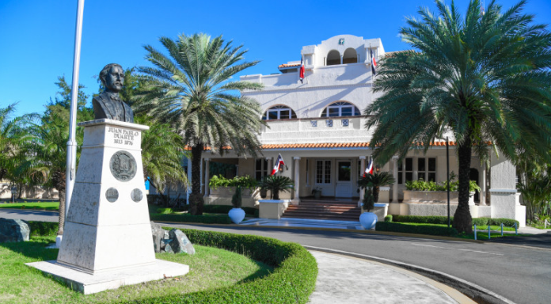

Top National Story
April 14, 2026President Abinader Declares State of Emergency After Severe Floods Devastate Five Provinces
The government mobilizes all national institutions to assist communities cut off by record-breaking rainfall and trough system impacts.
President Luis Abinader declared a regional state of emergency on Monday for five provinces and the National District, following widespread damage caused by a trough system associated with a low-pressure weather system. Agricultural losses were described as significant, with roads, electrical infrastructure, and thousands of homes affected.
Government officials confirmed that the COE and dozens of institutions — including the Ministry of Health, the Armed Forces, and civil protection agencies — were fully deployed to manage the crisis. Authorities also requested that citizens avoid areas near rivers and streams for their own safety.
"No family will be left without assistance during this emergency. The Dominican state is fully committed to responding."
— President Luis Abinader, COE Emergency Session
President Abinader at COE emergency coordination center, April 13.
More National News

Government Announces New Digital Education Plan for Public Schools
A national program to bring technology and updated teaching resources to every public school in the country was unveiled at a recent press conference.
Education experts believe that expanding digital access in schools could have a significant positive impact on learning outcomes. The program will support teachers, academic advisors, and researchers involved in curriculum development.

MIREX Works to Return Dominican Stranded in Vietnam for Over a Month
The Ministry of Foreign Affairs confirmed it is actively providing assistance to Joel Richards García, a young Dominican national stranded in Vietnam since March.
According to a communiqué from the institution, the Chancellery reiterated its commitment to protecting Dominican nationals abroad and is coordinating with Vietnamese authorities and local contacts to facilitate his return.
Dominican Tourism Remains Strong in the Caribbean Despite Global Tensions
Hotel occupancy rates near 90% were recorded during Easter Week 2026, reflecting continued confidence in the Dominican Republic as a premier Caribbean destination.
Tourism analysts note that the country has maintained its competitive edge in the Caribbean market, with record visitor numbers recorded so far this year despite economic uncertainty in other regions.